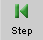
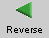
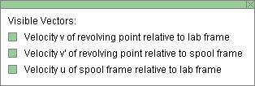
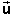
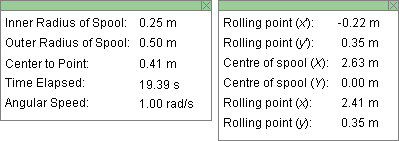
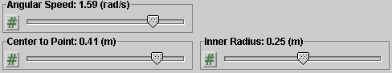
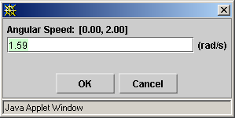
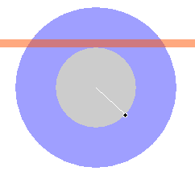
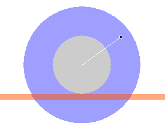

There are six basic control buttons. They are, from left to right:
-
 Rewind. Resets the simulation to the initial
position with the previously chosen initial values. If
the path is displayed, Rewind will allow you to compare
paths traversed under different conditions, e.g.,
different initial velocities.
Rewind. Resets the simulation to the initial
position with the previously chosen initial values. If
the path is displayed, Rewind will allow you to compare
paths traversed under different conditions, e.g.,
different initial velocities.
After clicking Rewind, click Play to restart the motion.
-  Step. Lets you step through the motion in equal time steps going from right to left.
-
-

Reverse/Pause. Starts the motion in reverse
direction, i.e., from right to left.
After REVERSE has been clicked, the button will change into the PAUSE button
 .
.
Clicking PAUSE will freeze the motion. To resume the reverse motion, click REVERSE once more.
-
 Play/Pause. Starts the motion in forward
direction, i.e., from left to right.
Play/Pause. Starts the motion in forward
direction, i.e., from left to right.
After Play has been clicked, the button will change into the Pause button
.
Clicking Pause will freeze the motion. To resume the motion, click Play once more.
-
 Step. Lets you step through the motion in equal
time steps in the forward direction, i.e., from left
to right.
Step. Lets you step through the motion in equal
time steps in the forward direction, i.e., from left
to right.
-
 Reset. Resets the applet to its default
setting.
Reset. Resets the applet to its default
setting.
Adjustments in the initial conditions can only be made after first clicking REWIND or RESET.


This toggle button displays/hides the path of the moving point.

The Vectors toggle button displays/hides the vector panel shown below.

Check the checkbox for a vector to display that vector. Three velocity vectors can be displayed:
-
velocity
 of the point on the spool relative to the lab
frame,
of the point on the spool relative to the lab
frame,
-
velocity ' of the point on the spool relative to the
frame translating with the spool,
- the velocity  of the frame translating with the spool relative to the Lab frame.
When the motion is paused, the velocity vector
can be
dragged. By placing it so that its tail end is at
the tip of the velocity ', you can demonstrate that the
three velocities satisfy the Galilean velocity
addition theorem: = ' + .
 .
.
The Data toggle button displays/hides the two data boxes illustrated below. The two boxes can be dragged separately. The box on the left displays quantities that are constant during the motion and the elapsed time. The box on the right displays the coordinates of the revolving point in two frames of reference and the coordinates of the center of the spool.

- Inner radius: variable radius of the inner cylinder of the spool (the spool's inner cylinder ties together the two outside disks of the spool)
- Outer radius: radius of the ouside disks of the spool (this radius is fixed at 0.50 m)
- Center to point: variable radial distance from the central axis of the spool to the revolving point
- Time elapsed: measured from the beginning of the motion; the time is reset upon REWIND or RESET
- Angular speed: angular speed of rotation of the spool in rad/s
-
Rolling point coordinates. The coordinates of the
point on the rolling spool are displayed relative to two
pairs of axes:
- the primed (x',y') axes whose origin is at the center of the spool,
- the unprimed (x,y) axes which are fixed relative to the screen (Lab frame) such that x = 0 at the left edge of the applet window and y = 0 at the level of the spool's axis.
The x and x' axes point to the right and the y and y' axes upward.
- Center of spool coordinates. The coordinates of the center of the spool in the (x,y) coordinate system are denoted (X,Y)

There are three sliders in all. They are described below, in the order from top left to bottom right.
You can adjust a slider setting either by dragging the slider tab or by entering an exact value in the slider input dialog.
To enter an exact value, click on the Input Dialog button
 of the slider to open the dialog. The dialog
for the Angular Speed slider is illustrated below. The
range in which values can be entered, from 0 to
2.00 rad/s in this case, is indicated above the data
entry field.
of the slider to open the dialog. The dialog
for the Angular Speed slider is illustrated below. The
range in which values can be entered, from 0 to
2.00 rad/s in this case, is indicated above the data
entry field.

Clicking on a slider to the left or right of the slider tab allows fine adjustment of the slider setting.
- Angular Speed. Use this slider to adjust the angular speed of rotation of the spool between 0 to 2.00 rad/s, in steps of 0.01 rad/s.
-
Center to Point. Use this slider to adjust the
radial distance from the axis of the spool to the
moving point between 0 to 0.50 m, in steps of 0.01 m.
0.50 m is the value of the fixed outer radius R of the spool. -
Inner Radius. Use this slider to adjust the
inner radius (radius of the inner cylinder) of the
spool between 0 and 0.50 m, in steps of 0.01 m.
0.50 m is the value of the fixed outer radius R of the spool.
Top: select this radio button to have the spool's inner cylinder supported from above, as in the following snapshot.

Bottom: select this radio button to have the spool's inner cylinder supported from below, as in the following snapshot. This is the default setting.
